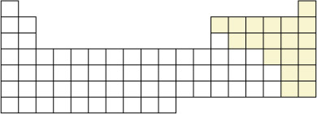
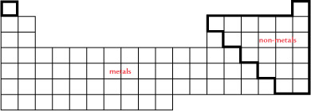
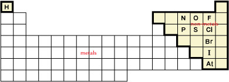

Module 1—Chemical Foundations
 Explore
Explore
Molecules are formed when two or more non-metallic elements share electrons.

 Self-Check
Self-Check
SC 1. Can you identify the location of the non-metallic elements on the periodic table representation? You may wish to print a copy of this figure and shade in their locations. You can check your answer by referring to page 14 of your textbook.
SC 2. Molecules can be classified into two categories: molecular elements and molecular compounds. Can you identify the location of the molecular elements on the periodic table representation?
Self-Check Answer
SC 1. Use the following chart to answer your question. The non-metals are placed on the right side of the table.

SC 2. The following chart shows the location of the molecular elements.

Naming Molecular Elements
 Read
Read
Read page 33 of the textbook and page 34 to the end of “Summary” to review the recognition and naming of molecular elements and the procedure for naming molecular compounds. Attempt Self-Check questions 3 and 4. If you wish to complete a further review, open the Additional Review of Molecular Compounds.
Self-Check
SC 3. State the name of the following substances.
-
CO
-
P4O10
-
I2
SC 4. State the chemical formula for the following substances.
-
dinitrogen tetraoxide
-
carbon disulfide
- fluorine
Self-Check Answer
SC 3.
-
carbon monoxide
-
tetraphosphorus decaoxide
-
iodine
SC 4.
-
N2O4
-
CS2
-
F2